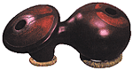

Udu: Глиняный барабан-горшoк, происходящий из племен Ibo и Hausa в Нигерии (udu - одновременно 'глиняная посуда' и 'мир' на языке Ibo.)  Этот барабан появился, когда древние гончары проделали второе отверстие - сбоку - на глиняном сосуде и обнаружили возникший потрясающий звук. Глубокие, настигающие звуки, которые производил udu, многим казались "голосами предков" и первоначально его использовали в религиозных и культурных церемониях.Барабаны udu не только красивы(они выставлены в экспозиции нескольких известных музеев), но и производят глубокие басовые тона, звуки, близкие tabla, тональные вариации talking drum, и много необычных звуков. Основная техника игры состоит в открывании/закрывании ладонью бокового отверстия, в то время как другая рука прикрывает на разное расстояние верхнее отверстие, и наоборот. Варьируя тип удара и способ движения руки можно обнаружить много различных тональных изменений. Иногда udu наполняют водой, чтобы добиться изменения оттенка. |
Ukelele: Популярный гавайский 4х струнный инструмент. Близок 6-струнной гитаре, но имеет только 12 ладов. Ukelele исполняет основной аккомпанимент стилю hula (hula-hula). 'Uli 'Uli: Гавайский перкуссийный инструмент - небольшой полый gourd, заполненный галькой или семенами. К нему крепится рукоятка, украшенная сверху петушиными перьями. Танцор держит 'uli 'uli в правой руке, в процессе выступления встряхивает и ударяет им себя по левой руке, плечу, колену и прочим частям тела. Umakweyana: Южно-африканский инструмент, состоящий из корпуса-gourd и лука с одной струной. Umakweyana получила распространение среди племен зулусов Свазиленда в конце XIX века. Это был инструмент «девушек-на-выданье», которые исполняли на нем песни любви. В наши дни осталось совсем немного женщин, умеющих играть на umakweyana и наряду с любовными песнями они исполняют «песни хвалы» в традиции Izibongo. |